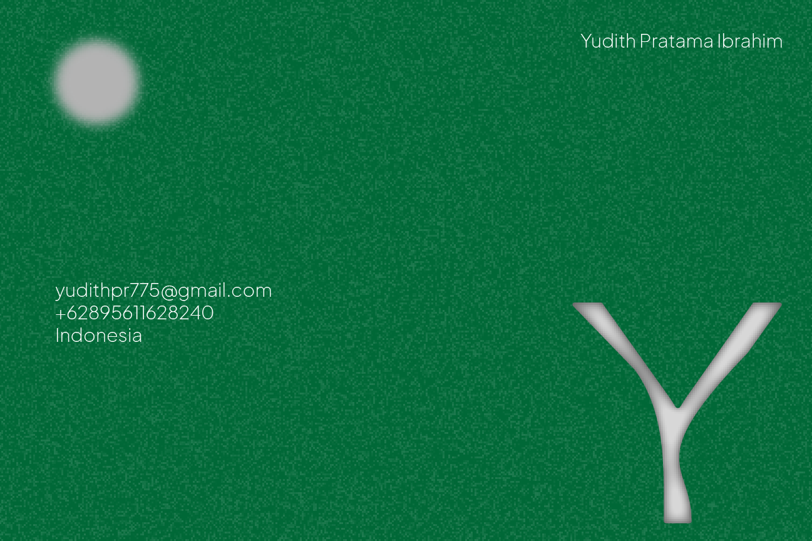

RAMOE PROJECT
Ramoe is a self-graphic design project founded in 2024 by Alya Putri Rahmasari and Yudith Pratama Ibrahim, driven by shared passions for design, music, culture, history, and architecture. The project brings together a collective of passionate individuals who collaborate to unleash their full potential, creating graphic design work that embodies their ideas, personalities, and expressions. The name "Ramoe," meaning "to gather" in Bahasa, reflects the project's focus on collaboration and collective creativity, aiming to transcend individual limitations through teamwork and shared vision.
WORK

As one of the most influential Italian designers, Enzo Mari gained critical acclaim upon his works. 16 Animali is a thought provoking article yet true to its motive. Completely reflecting his practice and belief, as both designer and thinker.


Another track by NewJeans titled "How Sweet" is released with a groovy blend of electro beats and smooth bass. The record potray a sweet playful summer daylight after escaping toxic and sticky-situation. Inspired by Japanese record package, we came up with the design to potray the bubbly beats and freely nonchalant lyrics.
"Sabu baru" is an innovative architectural concept that merges the traditional architecture of the "Sabu" house—a signature cultural dwelling from Nusa Tenggara Timur (NTT) in Indonesia—with modern, adaptive methods to meet contemporary needs. This integration respects the heritage and aesthetic of the original Sabu houses while incorporating modern materials, technologies, and designs to enhance functionality, sustainability, and comfort for current lifestyles.
This architectural design was initiated by Diana Pramitasari, S.T, M.Eng, Ph.D., Alya Putri Rahmasari, Maulana Nasrul Arfa'i, and Setia Aji Wardana, in collaboration with Ramoe. Their collective expertise and innovative approach have brought a fresh perspective to the preservation and adaptation of traditional Sabu architecture, ensuring that these cultural treasures remain relevant and functional in today's world. Through this collaboration, the team aims to honor the cultural heritage of NTT while promoting sustainable and modern living solutions.

ABOUT
A driven full-stack developer and multidisciplinary designer who blends technical skills with creativity to build user-focused solutions. Passionate about combining innovation with functionality

CONTACT
